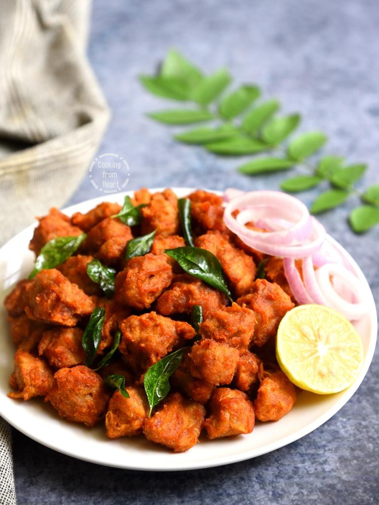

Soya fry

Description:
A protein-packed stir fry made with boiled soya chunks sautéed in a flavorful mix of onions, tomatoes, and spices, perfect with roti or rice.
Ingredients:
- Soya chunks: 1 cup
- Onion: 1 (chopped)
- Tomato: 1 (chopped)
- Green chilies: 1-2 (optional)
- Turmeric: 1/4 tsp
- Red chili powder: 1/2 tsp
- Garam masala: 1/2 tsp
- Salt to taste
- Oil: 1 tsp
- Coriander leaves: for garnish
Steps:
- Boil soya chunks in water for 5 minutes, drain, and squeeze out excess water.
- Heat oil in a pan. Sauté onions and green chilies until golden.
- Add tomatoes, turmeric, red chili powder, and salt. Cook until tomatoes soften.
- Add boiled soya chunks and garam masala. Stir-fry for 5-7 minutes.
- Garnish with coriander leaves and serve with roti or rice.